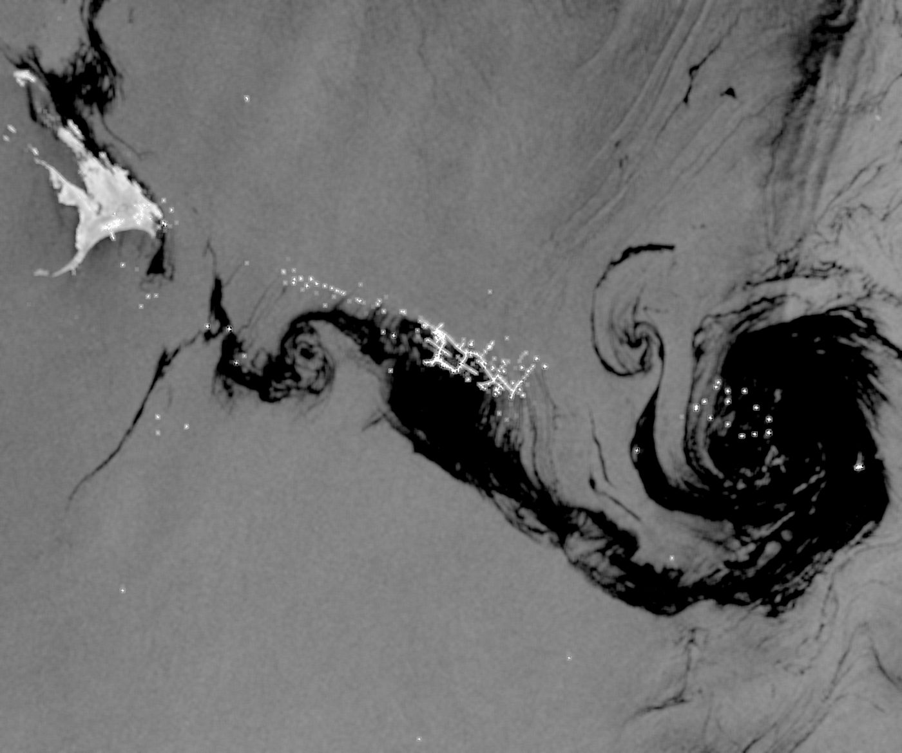
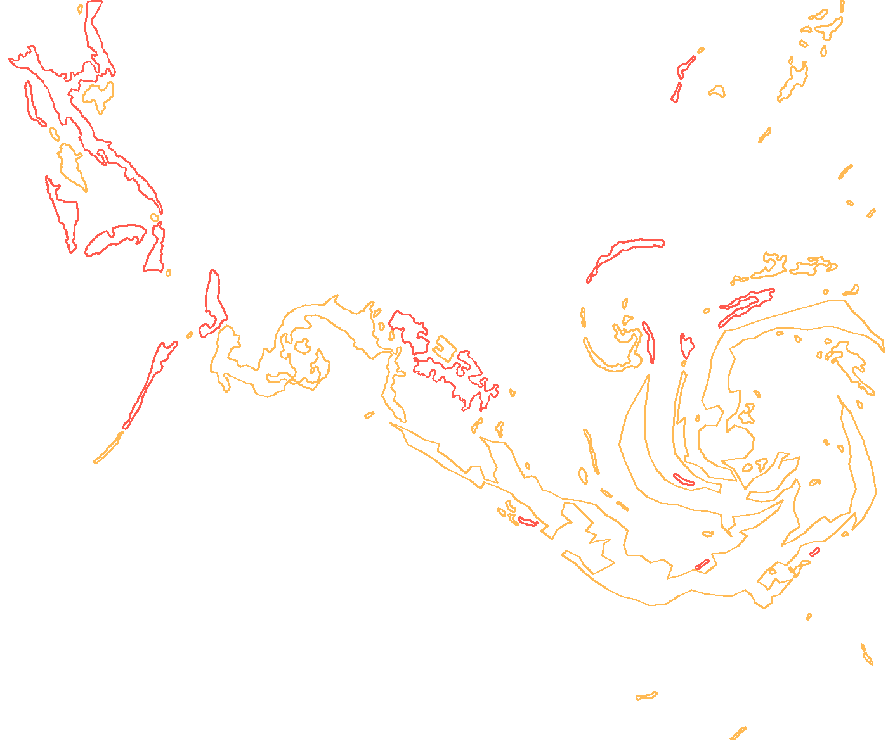
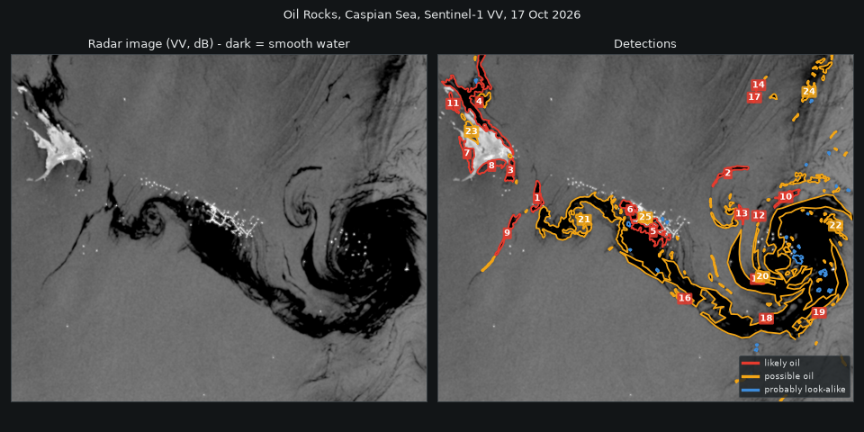

Young Creators League 2026 / Problem statement / Theme: Water Security
OceanEye: spotting oil spills at sea with free radar satellite images
A free tool that lets fishing co-operatives, schools and small port offices watch their own coast, through clouds and at night.
Team
Rian Palan (team leader), Nivaan Alex (presenter), Vivan Sojitra (researcher)
School
The Galaxy School, Wadi, Rajkot
Mentor
Toral Dwivedi
Application
YCL/D2026/0537
vivan-cpu.github.io/oceaneye
Finding oil spills at sea in free radar images
Radar sees through clouds and at night, when normal photos can't. OceanEye marks the patches of sea that are smoother than they should be and scores how likely each one is to be oil.
Open the full app


#5 likely oil, 7.7 km²#1 likely oil, score 5
OceanEyeProblem statement
01Selected theme
Water Security. Clean coastal and ocean water is part of water security. Oil in the sea poisons the water that fish, coral, mangroves and coastal communities depend on.
02Problem identified
Oil spills at sea are hard to find quickly. Finding a spill early decides how much damage it does, but the usual tools have gaps. Ordinary satellite photos need daylight and a clear sky. Aircraft and ships can only search a small area and are expensive to send. So a spill can spread for a long time before anyone knows where it is.
Our question: can a student team find oil spills using only free satellite data, free software and a laptop?
03Background and research
A real case from India. On 25 May 2025 the container ship MSC ELSA 3 sank about 14 nautical miles off Alappuzha, Kerala, with around 84 tonnes of diesel and 367 tonnes of fuel oil on board. It was monsoon season, so normal satellite photos were mostly cloud and the Coast Guard had to send aircraft to look for the slick.
Not only accidents. A lot of oil at sea comes from ships illegally washing out their tanks, often at night and far from shore, where nobody sees it.
Close to us. Gujarat has India's longest coastline. The Gulf of Kutch, about 100 km from Rajkot, has some of the country's biggest oil terminals and tanker routes, right next to the Marine National Park with coral reefs and mangroves.
An old observation. Benjamin Franklin noticed in 1773 that a spoonful of oil calmed the ripples over a large part of a windy pond in London.
1 / WindWind makes small ripples a few centimetres long. They scatter radar back to the satellite, so normal sea looks grey.
2 / OilOil forms a thin film that flattens the ripples. Smooth water acts like a mirror and bounces the beam away.
3 / DarkAlmost no echo returns, so oil looks dark, usually a few decibels darker than the sea around it.
Sentinel-1 is run by the European Space Agency. Its images are free through Copernicus.2
OceanEyeProblem statement
03Background and research, continued
Look-alikes. Calm water, rain cells, shadows from land and algae can also look dark. A detector has to say how sure it is and warn when the sea is too calm to trust. Existing systems such as EMSA CleanSeaNet in Europe and INCOIS in India show that satellite oil detection works, but they are run by large agencies.
What we built to learn about it. A Python program that downloads a Sentinel-1 image for any area and date, hides land, compares each patch of sea with the water around it, and scores how likely each dark patch is to be oil. We tested it on a real image of the Oil Rocks oil field in the Caspian Sea (17 October 2026) and on a simulated scene where we know the right answer.
04People affected
Coastal fishing families. Oil can shut fishing for weeks. They lose income first and have the least to fall back on.
People who work on the coast: fish sellers, boat owners and tourism workers.
Marine life: fish, birds, coral and mangroves, which are slow to recover.
Port officials, Coast Guard teams, NGOs and local authorities, who need to know where a spill is before they can respond.
Everyone downstream, since seafood and clean beaches are shared resources.
05Why it matters
The sooner a spill is located, the smaller the area that needs cleaning and the less oil reaches the shore. Illegal dumping is also much easier to stop when it can be seen and recorded. At the moment, only large agencies have regular satellite watching. A free tool that a fishing co-operative, a school or a small port office can use puts that capability in the hands of the people living next to the sea. It fits Water Security directly, because clean water and healthy seas are what coastal livelihoods depend on.
OceanEye, YCL 20263
OceanEyeProblem statement
06Proposed solution
OceanEye is a free website and app. You pick an area of sea and a date. It downloads that day's Sentinel-1 radar image, hides land, finds dark patches that could be oil, gives each one a score, and shows them on a map with their size in km². Results can be exported for Google Earth or QGIS.
It works through clouds and at night because it uses radar, not normal photos.
Every result says why it was flagged (how dark, how long and thin, how sharp the edges are). A person always checks a result before anything is reported.
It warns when the sea is too calm to trust, because calm water also looks dark.
A second check from the ground. Using a phone camera, a photo or a phone's light sensor, a small AI model looks for oil sheen, and the result can be compared with what the satellite saw at the same place. Honest limits: it was trained on openly licensed photos (70 patches of oil), found about half of the oil on photos it had not seen, and has not been tested on real spills at sea.
Everything runs on free services, so the cost to a user is zero.
oceaneye-ycl.streamlit.app

The app's result on a real radar image (Oil Rocks, Caspian Sea, 17 October 2026): dark patches marked and scored.
OceanEye, YCL 20264
OceanEyeProblem statement
07Technology and prototype
Software prototype, working now. A Python program using Sentinel-1 data from Copernicus. It removes radar speckle with a Lee filter, hides land, compares each pixel with the sea around it (about 3 km), marks patches at least 3 dB darker, and scores each patch by contrast, shape and edge sharpness. It runs as a demo in the browser on our website and as a full Streamlit app.
Functional prototype, working now. The website and app are the prototype. Anyone can open them, pick an area and a date, and get real results from real Sentinel-1 images. A second part checks water from the ground, using the camera of a phone or laptop, an uploaded photo, or a phone's light sensor through the free Phyphox app, and compares the spot with what the satellite saw within 5 km.
SoftwarePython, free Sentinel-1 data from Copernicus, free hosting on GitHub Pages and Streamlit Cloud.
Satellite checkDark patches found by rules, scored for contrast, shape and edge sharpness.
Camera checkRules find dark and rainbow patches, then a small trained model scores each one. It runs in the browser, so photos are never uploaded.
Phone light sensorA sudden change in reflected light, read through Phyphox, can be a sign of oil on the surface.
We have not built a physical model, and we say so. Everything above runs today and can be tried by anyone with a link.